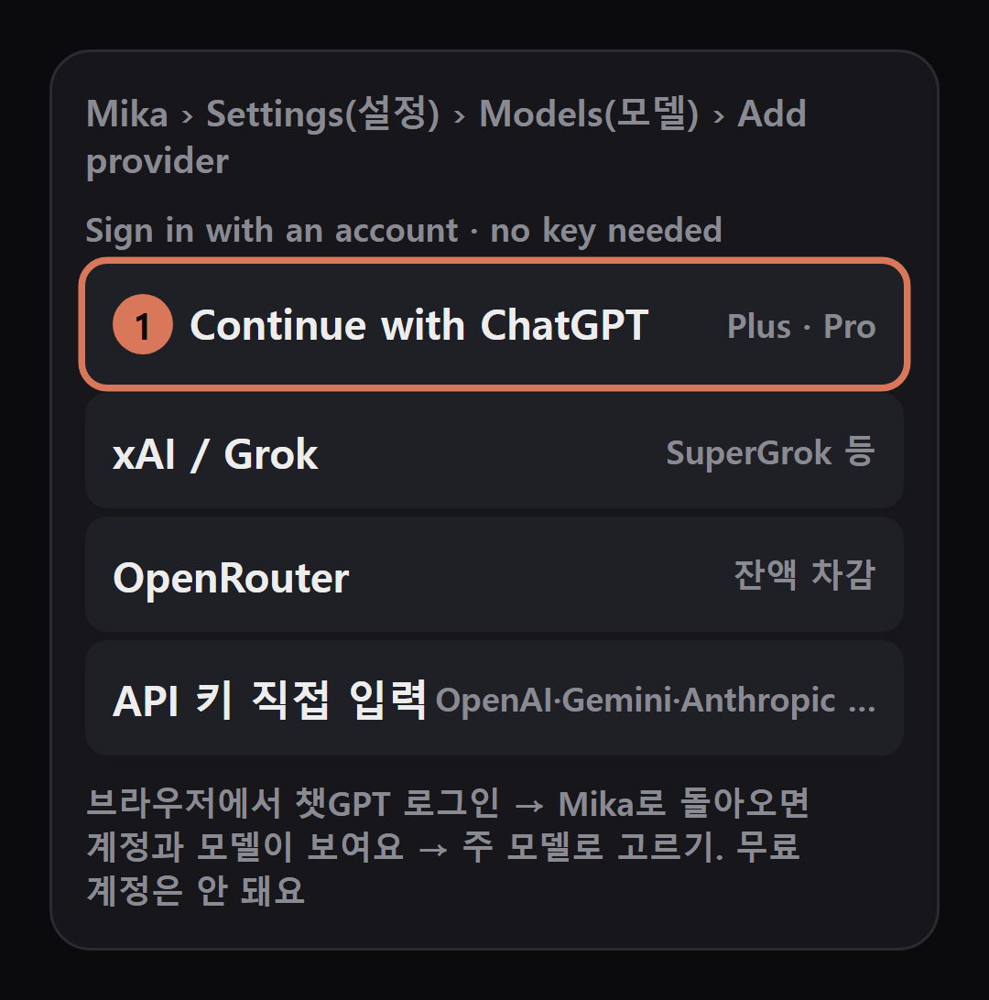
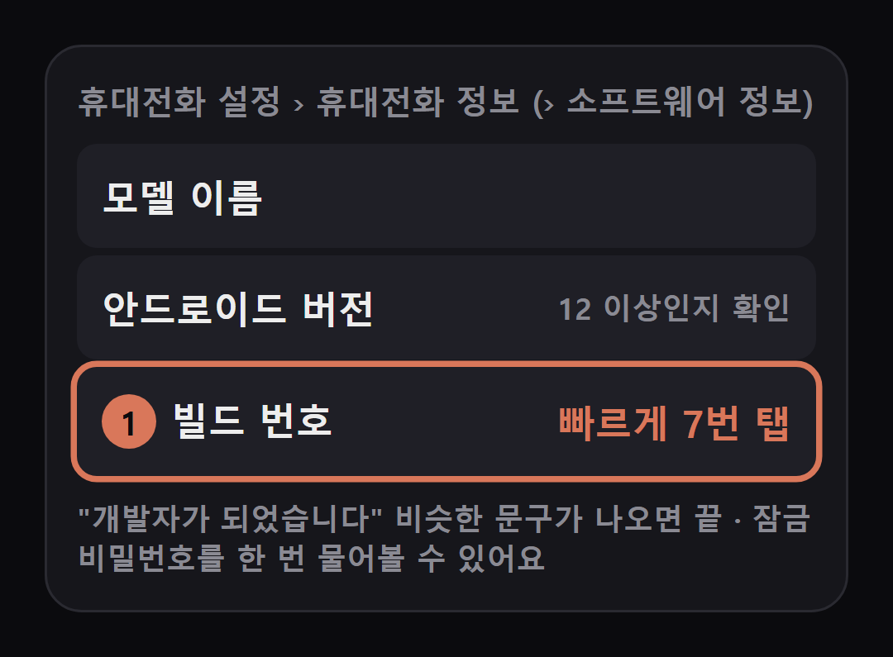
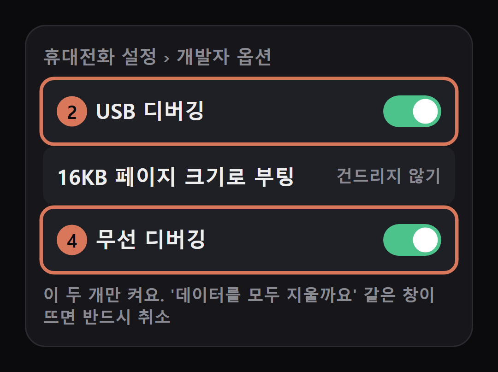
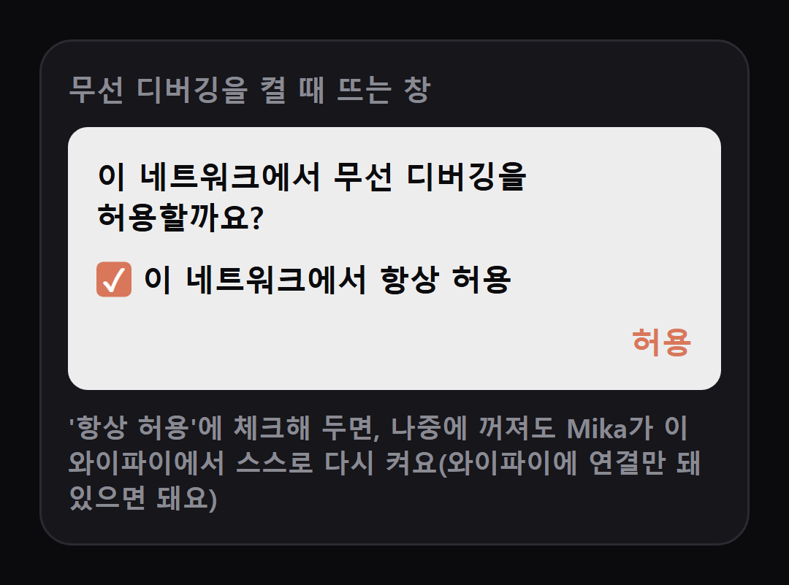
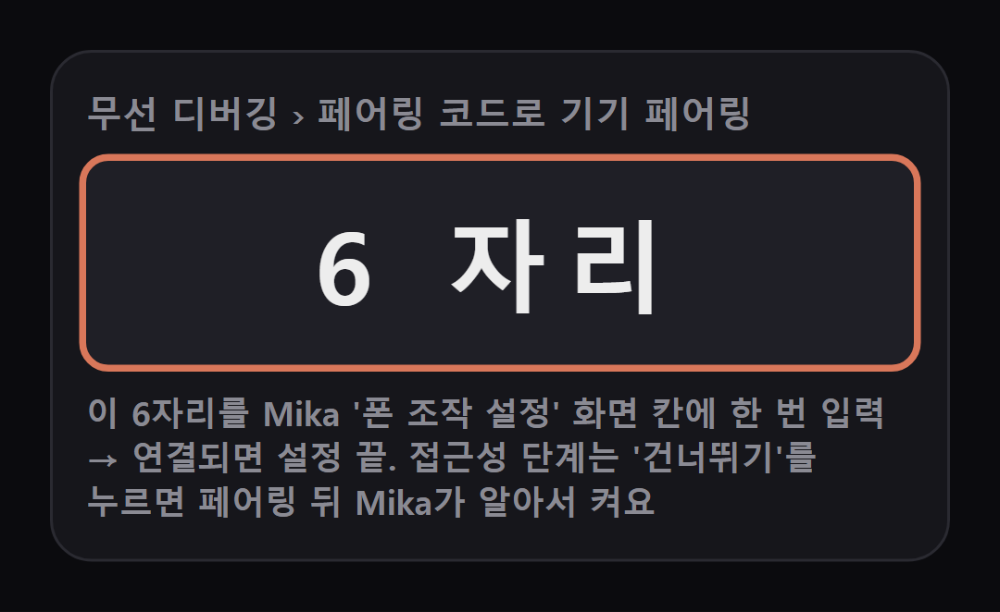
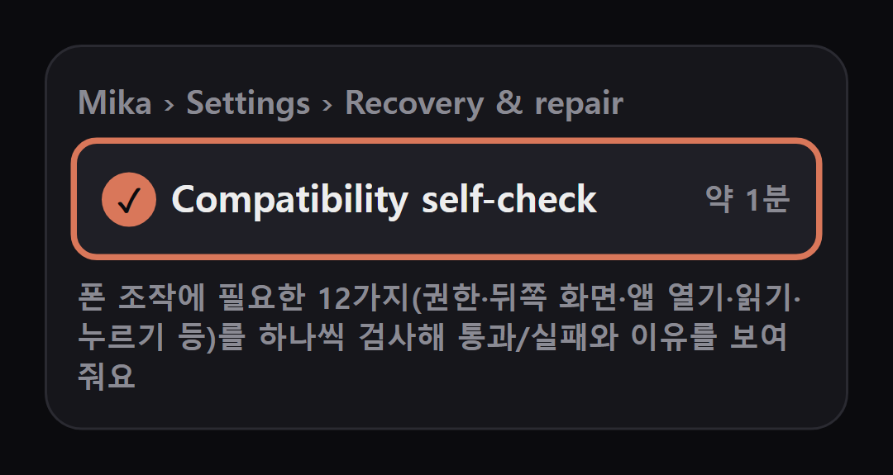
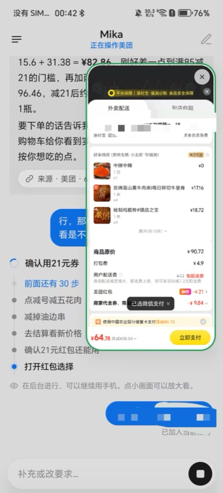

Mika는 안드로이드 폰에 까는 무료 오픈소스 AI 비서 앱(Apache-2.0)이에요. 할 일을 말하면 눈에 안 보이는 '뒤쪽 화면'에서 AI가 앱과 웹을 직접 열고 누르고 입력해서 끝내요. 그동안 내 폰은 평소처럼 쓰면 돼요. 앱마다 따로 연결할 필요 없이 화면을 보고 버튼을 찾아요. 이 정리본은 공식 문서 기준이에요(저희 영상의 폰 화면도 전부 공식 데모예요).
플레이 스토어에는 없어요. 폰 브라우저로 아래 '내려받는 곳'을 열고 맨 위 최신 버전의 Mika-v….apk를 눌러 받은 뒤 설치해요. '출처를 알 수 없는 앱' 허용을 묻으면 이 브라우저만 허용해요. 같은 이름의 다른 저장소(복사본)가 있으니 꼭 wangzan101/Mika에서 받으세요. 새 버전은 앱 안 About › Check for updates로도 받아요.
처음 열면 모델 설정부터 안내해요. Settings › Models › Add provider 맨 위 'Sign in with an account'에서 Continue with ChatGPT → 브라우저에서 로그인 → Mika로 돌아오면 계정과 모델이 보이고 주 모델로 고를 수 있어요. 사용량은 내 챗GPT 요금제에서 나가요. 앱 화면은 영어(또는 중국어)지만, 한국어로 말하면 한국어로 답해요.

폰 앱을 대신 누르게 하려면 한 번만 '폰 조작 설정(Set up phone control)'을 해요. 6단계 체크 목록이 나오고 단계마다 맞는 설정 화면으로 데려가 줘요. 1단계: 휴대전화 설정 › 휴대전화 정보(폰에 따라 › 소프트웨어 정보)에서 '빌드 번호'를 빠르게 7번 눌러요.

2단계: 개발자 옵션에서 USB 디버깅을 켜요(케이블은 필요 없어요). 3단계 접근성은 '건너뛰기(Skip)'를 누르세요 — 페어링 뒤 Mika가 스스로 켜요(APK로 깐 앱은 직접 켜려 하면 '제한된 설정'에 막히기 쉬워요). 4단계: 무선 디버깅 스위치를 켜요. 이 두 개 말고 다른 스위치는 건드리지 마세요 — 데이터를 지우자는 창이 뜨면 반드시 취소.


무선 디버깅 › '페어링 코드로 기기 페어링'에 나오는 6자리를 Mika 화면 칸에 한 번 입력해요. 연결되면 설정 끝이에요. 다음부터는 Mika가 알아서 연결해요.

Settings › Recovery & repair › Compatibility self-check를 눌러요. 약 1분 동안 12가지를 검사해 통과/실패와 이유를 보여 줘요. 실패가 있으면 아래 '막힐 때'를 보세요.

대화창에 할 일을 적거나, 입력칸을 길게 눌러 말로 해요. 잘 되는 요령: ① 어디서(앱·사이트 이름) ② 조건(가격·별점·시간) ③ 어디까지 할지('장바구니까지만', '결제 전에 멈춰')를 한 문장에 넣어요. 아래 '복사해서 쓰기'에 바로 붙여 쓸 문장이 있어요.
일하는 동안 대화창에 단계가 하나씩 쌓이고(무엇을 봤고 무엇을 눌렀는지), 아래 작은 실시간 창을 누르면 뒤쪽 화면을 크게 볼 수 있어요. 끝나면 알림과 함께 결과를 정리해 줘요. 중간에 말을 더 하면 고쳐서 이어 가고, 멈추면 어디까지 했는지 말해 줘요 — '계속'이라고 하면 거기서 이어서 해요.
지금 보는 화면을 보내기: 다른 앱을 보다가 떠 있는 동그라미(캡슐)를 두 번 탭하고 '뭐라고 답하지?', '이거 메모해 줘'. 예약·조건 작업: '내일 9시에 알려 줘', '매주 금요일 이거 해 줘', '매일 아침 8시 날씨 보고 비 올 때만 알려 줘'. 내장 브라우저: 로그인을 유지한 채 웹 검색·비교·내려받기. 한 번 끝낸 일은 스킬로 저장해 다음엔 더 빠르게 해요.
결과가 마음에 안 들면 같은 대화에 '별점 4.7 이상으로 다시', '두 번째 걸로 바꿔'처럼 고칠 점만 말해요. 자주 하는 일은 '매주 ○요일에 해 줘'로 예약해 두면 원래 대화에서 제시간에 돌아요(내가 없는 동안엔 결제 단계는 건너뛰고 알려 줘요).
쓰기 좋은 때: 조건 맞춰 고르고 담기, 알람·일정처럼 여러 번 눌러야 하는 설정, 긴 대화·목록 읽고 정리, 정해진 시간에 반복하는 확인. 안 맞는 때: 아이폰, 안드로이드 11 이하, 회사 폰처럼 개발자 옵션을 못 켜는 폰, 보내면 되돌릴 수 없는 메시지를 확인 없이 맡길 때, 화면에 남에게 보이면 안 되는 내용이 있을 때.
① 대화창에 '아마존에서 30달러 이하, 별점 4.5 이상 USB-C 충전기 찾아서 장바구니에 담아 줘. 결제 전에 멈춰.' ② 앱이 없으면 웹으로 연다고 말하고 뒤쪽 화면에서 검색 → 조건에 맞는 상품을 열어 확인 → 장바구니에 담기 → 장바구니를 다시 열어 정말 담겼는지 확인 ③ '담았고 결제 직전에 멈췄어요'와 함께 고른 상품·가격·별점·장바구니 목록을 정리 ④ 결제는 내가 직접. (공식 데모 기준 약 3분, 18단계)

폰 브라우저로 열기 — 최신 Mika-v….apk
https://github.com/wangzan101/Mika/releases/latest
쇼핑 — 앱·사이트 이름, 조건, '결제 전에 멈춰'
[쇼핑 앱 이름]에서 [상품]을 [가격] 이하, 별점 [4.5] 이상으로 찾아서 가장 리뷰 많은 걸 장바구니에 담아 줘. 결제 전에 멈춰.
공식 예시 문장
내일 아침 9시 40분이랑 10시에 알람 맞춰 줘.
웹 검색 — 날짜·직항 조건
구글 항공권에서 다음 주 금요일 [출발지]에서 [도착지] 가는 가장 싼 직항 찾아서 출발 시각이랑 가격 알려 줘.
예약 작업 — 공식 예시 문장
매일 아침 8시에 날씨 보고, 비 올 때만 알려 줘.
다른 앱에서 떠 있는 캡슐을 두 번 탭한 뒤
이거 뭐라고 답하면 좋을지 세 가지만 써 줘. 보내지는 마.
도움이 되셨다면
@ai.antenna.kr
에서 바로 쓰는 AI 활용법을 계속 올립니다.